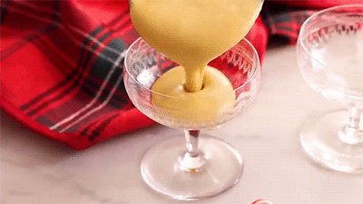

Drinks: Eggnog
Ingredients:
- 6 large egg yolks
- 1 cup granulated sugar (200g)
- 1 to 2 cups whole milk (240-480ml)
- 1 cup heavy cream (240ml)
- ¼ teaspoon grated nutmeg
- 1 cup bourbon (brandy and rum work as well) (240ml)
- 1 tablespoon vanilla extract
- Cinnamon for serving
Directions:
- In a large mixing bowl, combine the egg yolks and sugar. Whisk vigorously by hand or beat with an electric mixer on medium speed until the yolks are very thick, pale, and fluffy, about 1 minute. Set aside.
- In a medium saucepan, combine the milk, cream, and nutmeg. (Use less milk if you like a thicker eggnog.) Place over medium heat and cook stirring occasionally until steaming, about 3 minutes. Whisk ½ cup of hot milk into the egg yolk mixture, then slowly whisk the rest of the milk into the egg yolks. Return the mixture to the saucepan.
- Place over medium-low heat and cook, stirring constantly until the mixture is thickened enough to coat the back of a spoon or your desired consistency, then remove it from the heat. (Do not boil. The mixture should reach at 160°F but for a thicker eggnog, cook to 190-200°F.)
- Strain through a fine mesh sieve into a bowl. Whisk in the bourbon and vanilla. Chill for at least 3 hours or ready to serve. Serve with a sprinkling of cinnamon or freshly grated nutmeg. Eggnog can be refrigerated in an airtight container for up to 1 week.
- Enjoy!

Credits: Preppy Kitchen, "Amazing Eggnog Recipe.", Dec. 13, 2023